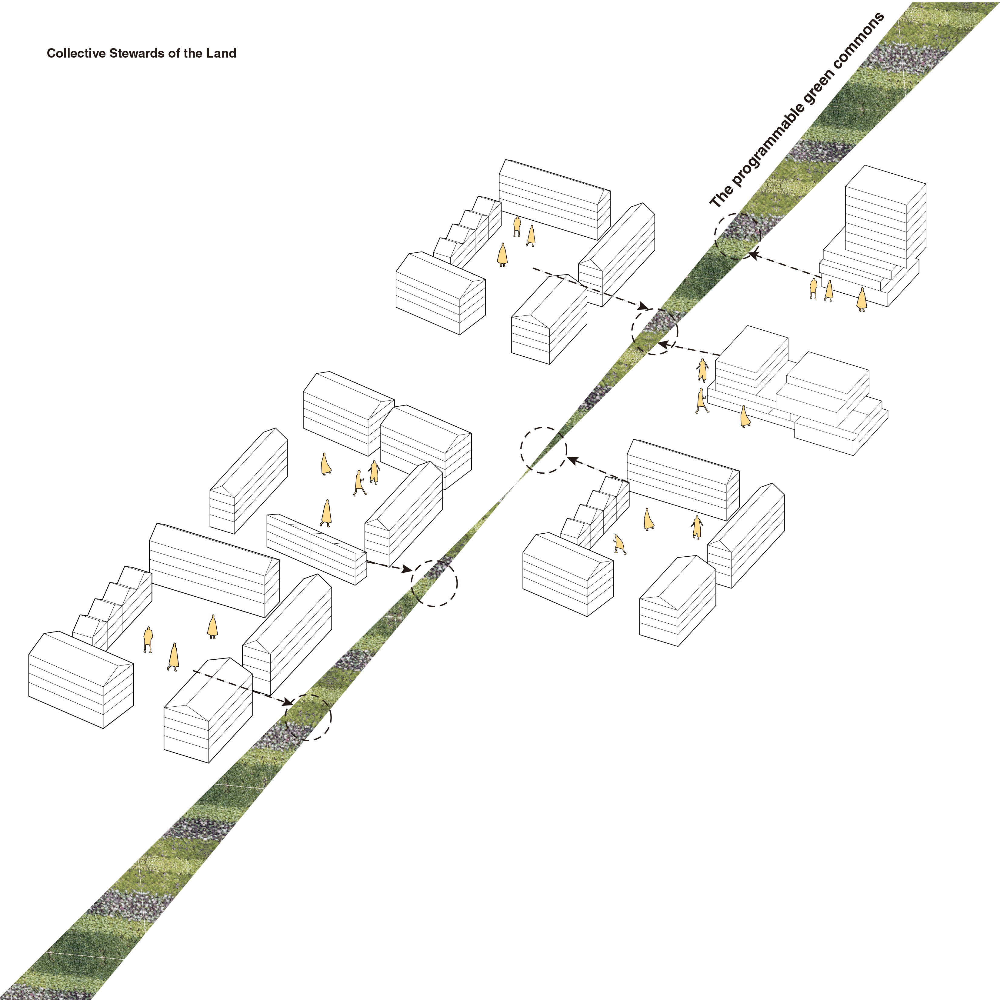

Block-by-Block
title
Block-by-Block
course
ARC2013 Urbanism Studio
collaborators
Jason Chen, Shixun Wang, Zixuan Zhou
supervisor
Chloe Town, Mauricio Quirós Pacheco
category
spaces
+ Project Description
Downsview Airport, located in the Northern part of Toronto, is a site that has been shaped by its aerial past. After it’s decommision, the linear runway sits empty, as a gash in the ground, surrounded by isolated neighbourhoods that are like archipelagos.This empty land has become the subject of intense speculation, specifically for condo developments. These large-scale, top-down plans, lead to homogenous ownership models and typologies which deter social diversity.Our scheme poses the question, how can we build incrementally? At the urban scale, we reevaluate the rectilinear property lines that underlay the majority of Toronto’s fabric, and systems of ownership. These ownership models, lend to smaller scale building typologies, which create more personal, related communities. At the individual scale, each unit is flexible and equipped with plumbing and electrical fixtures but no interior finishing, with the intention that the space will be customized per resident.
.gif)


.gif)

